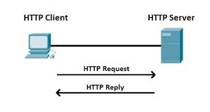

This is the foundation for data communication on the World Wide Web. It functions as a request-response protocol
The cycle involves a client sending a request to a server, and the server responding with the requested data or an error message.
It starts with a dns lookup. The browser contacts dns server to translate domain name to ip address
Using the IP address, browser initiates tcp connection to server. Once connection is established , browsser sends a http request.
Server receives and processes the request. A http response is sent and the browser receives a response. Tcp connection is closed or may remain open for subsequent requests.